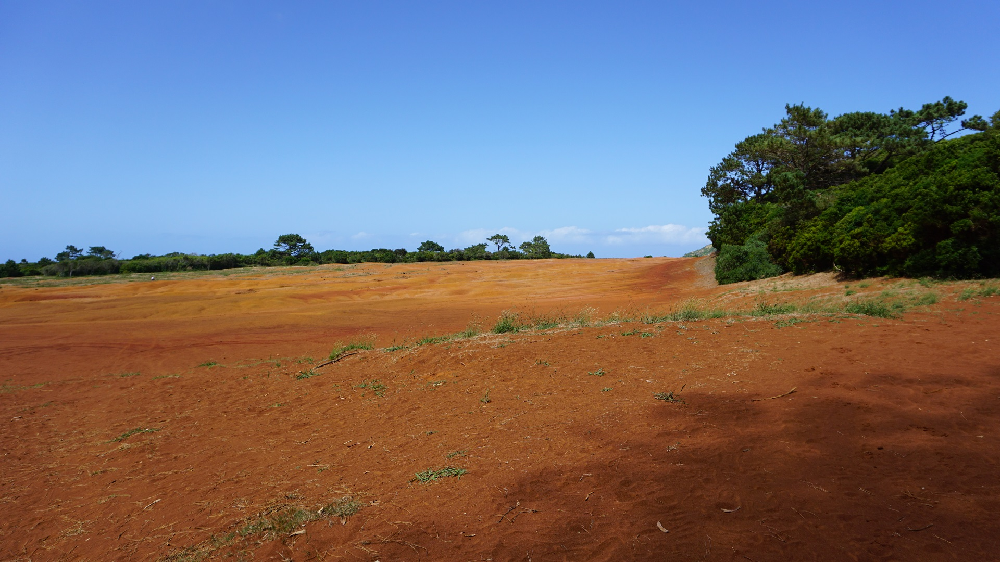

Santa Maria
São Miguel
São Jorge
Terceira
Pousada de Juventude de Santa Maria
Forte de São Brás de Vila do Porto
Forte de São Brás de Vila do Porto
Vista do Forte de São Brás de Vila do Porto
Baía dos Anjos
Baía dos Anjos
Barreiro da Faneca
Barreiro da Faneca

Poço da Pedreira
Poço da Pedreira
Miradouro São Lourenço
Miradouro da Pedra Rija
Farol da Maia
Previous
Next